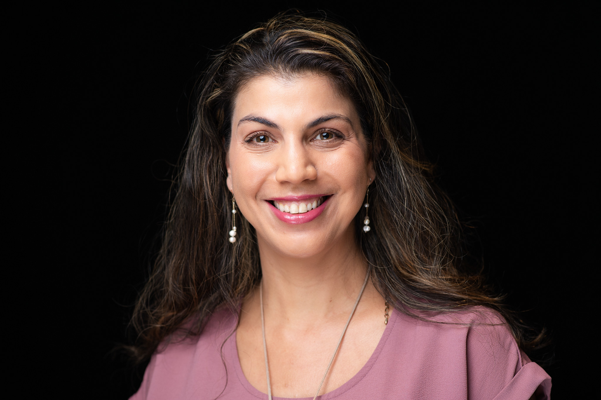

Foundational models & architectures
Transformers, diffusion, multimodal systems, and the mechanics underneath.
I work at the intersection of foundational models, content representation, and responsible AI — turning hard research questions into systems people can use.

A set of connected questions around how machines represent, generate, recommend, and make decisions about content.
Transformers, diffusion, multimodal systems, and the mechanics underneath.
Making audio, visual, and text content legible to machines.
Separating signal from spurious correlation in feature spaces.
Fairness, safety, privacy, robustness, and evaluation.
Understanding synthetic media and building reliable detectors.
Personalized discovery powered by meaningful representations.
From pixels and events to robust perception in the wild.
A career moving from image formation and perception to foundation models, safety, and product-scale ML.
Leading multimodal content representation and recommendation systems from research direction through data architecture, model development, and product integration.
Built responsible AI systems, synthetic content detection, fairness mitigations, and safety solutions for multimodal generative products.
Created event recognition and automatic photo album curation systems, including a 50% improvement in event detection and segmentation F1.
Developed perception algorithms for detection, recognition, registration, change detection, and multi-target tracking.
My Google Scholar profile ↗ is the living index. A few recent threads are below.
K. Thakral, T. Glaser, T. Hassner, M. Vatsa, R. Singh
A. Dubey et al., including T. Glaser
S. Mittal, A. Sudan, R. Singh, M. Vatsa, T. Glaser, T. Hassner
S. Mittal et al., including T. Glaser
T. Glaser, E. Ben-Baruch, G. Sharir et al.
Honors · GPA 4.0 / 95.4 · Computer vision research thesis
Dual degree · Psagot excellence track · Honors